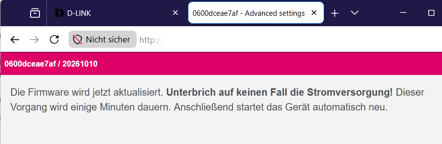

Dateien bereitlegen. Lade die RAMpe-Datei und das sysupgrade-Image herunter und leg sie in einen Ordner, den du wiederfindest, zum Beispiel "Downloads".
Feste Adresse am Rechner. Stell den Netzwerkanschluss deines Rechners
auf die feste Adresse 192.168.200.10 mit der Netzmaske
255.255.255.0. Ein Gateway brauchst du nicht. Wie das geht, steht unter
Feste IP-Adresse einstellen.
Kabel stecken. Verbinde den Rechner mit dem Router. Der Router hat noch keinen Strom.
Router in die Recovery bringen. Drück mit der Büroklammer die Reset-Taste und halte sie gedrückt. Steck jetzt den Strom ein und halte die Taste weiter, bis die LED rot blinkt. Dann loslassen.
Prüfen, ob die Recovery da ist.
Öffne im Browser http://192.168.200.1. Es erscheint die Recovery-Seite von D-Link.
Lade dort nichts hoch. Ihr Fortschrittsbalken läuft nur nach der Uhr
und sagt nichts darüber, ob die Datei ankam. Die Seite zeigt dir nur, dass
die Recovery bereit ist.
Ein ping hilft hier nicht, die Recovery antwortet nicht darauf.
Datei mit curl hochladen. Öffne ein Terminal (unter Windows die PowerShell), wechsle in den Ordner mit der Datei und gib ein:
Linux und macOS:
curl -H "Expect:" -w "HTTP %{http_code}, hochgeladen %{size_upload} Bytes\n" -o /dev/null -F "firmware=@gluon-rampe-20261015-d-link-aquila-pro-ai-m30-a1-recovery.bin;type=application/octet-stream" http://192.168.200.1/upload.cgi
Windows (PowerShell):
curl.exe -H "Expect:" -w "HTTP %{http_code}, hochgeladen %{size_upload} Bytes\n" -o antwort.bin -F "firmware=@gluon-rampe-20261015-d-link-aquila-pro-ai-m30-a1-recovery.bin;type=application/octet-stream" http://192.168.200.1/upload.cgi
Den echten Dateinamen statt gluon-rampe-20261015-d-link-aquila-pro-ai-m30-a1-recovery.bin einsetzen. Unter
Windows curl.exe genau so ausschreiben; antwort.bin nimmt nur die
Antwort des Routers auf und kann danach weg. Mehr unter
curl benutzen.
Warten. curl zeigt beim Hochladen eine Fortschrittsanzeige. Bei 100 % ist die Datei drüben, das dauert meist nur Sekunden. Danach schreibt die Recovery sie in den Speicher; dabei leuchtet die LED ruhig rot, etwas schwächer. Bis zum Neustart vergehen meist einige Minuten. Strom nicht ziehen. Oft kommt curl danach nicht von selbst zurück, obwohl alles geklappt hat. Dann beende es mit Strg+C (am Mac ctrl+C), aber erst, wenn der Router neu startet (beim Neustart blinkt die LED schnell weiß). Wartest du stattdessen, kommt curl nach einiger Zeit (bei uns gut 10 Minuten) von selbst zurück, meist mit "Recv failure: Connection timed out". Das ist in Ordnung. Entscheidend ist die letzte Zeile, sie zeigt, wie viel ankam. Geklappt hat es bei etwa 52,4 Millionen Bytes. Steht da 0, kam nichts an (siehe "Wenn etwas schiefgeht").
Die RAMpe. Nach dem Neustart blinkt die LED weiß und gleichmäßig, etwa einmal pro Sekunde. Stell den Rechner
wieder auf "automatisch" (DHCP) und öffne
http://192.168.1.1/cgi-bin/config. Es erscheint die Seite "Firmware
aktualisieren". Kommt "Not Found", hat sich der Browser eine Seite von
früher gemerkt: Tipp die Adresse vollständig ein, mit /cgi-bin/config am
Ende. Hilft das nicht, siehe Der Browser zeigt "Not Found". Kommt gar nichts, siehe Die Router-Seite antwortet nicht.
Die RAMpe bleibt auf dem Router, bis die Freifunk-Firmware sie ersetzt.
Startet der Router zwischendurch neu, ist das harmlos: Seite einfach
wieder aufrufen.
Zeigt der Browser stattdessen eine Warnung vor einem unsicheren
Zertifikat, hat er von sich aus https:// vor die Adresse gesetzt. Klick
auf "Erweitert" und "Trotzdem fortfahren" (je nach Browser etwas anders
benannt), dann kommt die Seite. Mehr dazu unter
Browser macht https daraus.

Freifunk-Firmware hochladen. Wähl das sysupgrade-Image deiner Community aus und klick "Datei hochladen". Die RAMpe zeigt die Prüfsumme (SHA256) der Datei. Vergleich sie mit der Prüfsumme, die deine Community zur Datei angibt. Stimmt sie, klick "Fortfahren".

Danach erscheint der Hinweis, dass die Firmware jetzt geschrieben wird. Jetzt den Strom nicht unterbrechen.

Fertig. Nach wenige Minuten startet die Freifunk-Firmware
deiner Community: je nach Community zuerst mit einer Einrichtungsseite
unter http://192.168.1.1 oder gleich im Betrieb.
Antwortet dort nichts, siehe Die Router-Seite antwortet
nicht; kommt "Not Found", siehe
Der Browser zeigt "Not Found". Wie es weitergeht,
beschreibt deine Community.